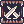
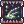
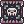
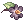
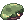
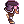

Levity's PvM Guillotine Cross Guide
| This guide has not been updated in a while. | ||
|---|---|---|
| Information on this page may be obsolete and outdated. Please refer to the author for information on future updates. Reason: "Last update July 2018" |
||
| Guillotine Cross | |||||||||||||||||||
|---|---|---|---|---|---|---|---|---|---|---|---|---|---|---|---|---|---|---|---|
| Job Base: | Thief | ||||||||||||||||||
| Written By: | Levity | ||||||||||||||||||
| |||||||||||||||||||
Overview
Hi my IGN is Levity and have many other classes other than a GX used in PvM but I mostly use my Ranger, Guillotine Cross, Rebel, and sometimes some support classes when doing instances.
The Class allows you to be self sufficient when having the right equipment allowing you to solo a lot of the PvM content available such as instances.
This guide will mostly go about the Rolling Cutter Build while including the Katar Crit Build as it is a better option in some situations. I will also include a brief writing about what is needed when creating Poison Bottles.
Stats
- STR - Important stat. Recommended amount will vary depending on build and items. This stat will provide you with ATK and allow you to have higher weight capacity.
- AGI - Important stat. Recommended amount will vary depending on build and items. This stat will determine how fast you are attacking and provide you with some FLEE values.
- VIT - Important stat. Recommend to get a total of 100 to receive stun immunity and allow you take more hits by giving you a bigger HP pool.
- INT - Unimportant stat. Generally not needed in a PvM GX as they are fairly self sufficient with different types of leeching equipment and there are ways to avoid silence immunity than reaching 100 INT.
- DEX - Important stat. This stat is very important to the Rolling Cutter build as you will need DEX to achieve higher HIT. Also important in to creating Poison Bottles.
- LUK - Important stat. This stat is as important as DEX as it provides bonus ATK, HIT, Critical Rate, and Perfect Dodge. It's also another important stat when creating Poison Bottles.
Skills
I'll only be going through the important skills of each job transitions which you'll be needing as there is a number of skills you will not really touch.
First Job Skills
| Skill | Max Level | Recommended Level | Notes |
|---|---|---|---|
 Double Attack Double Attack
|
10 | 5 | This isn't really important as you become a Guillotine Cross but is very helpful in your early stages when transitioning through the jobs. |
 Imrpove Dodge Imrpove Dodge
|
10 | 10 | It's a small boost once you transition to your 3rd Job but is very helpful as it provides +30 Flee as a Thief, and provides +40 Flee as an Assassin or an Assassin Cross |
 Steal Steal
|
10 | 10 | Not really important in terms of usage in this guide but must be taken as a requirement to get Hiding. |
 Hiding Hiding
|
10 | 10 | A fairly useful skill when levelling during your 2nd Job transition when you use this skill with Grimtooth when mobbing as it allows you to safely kill groups of mobs as long as they aren't able to detect you.
Do note that Insect and Demon monsters WILL be able to detect you under Hiding. |
 Envenom Envenom
|
10 | 10 | Not really an important skill but is a requirement to get Enchant Poison and is one of the skills required to open the skill Create Deadly Poison. |
 Detoxify Detoxify
|
1 | 1 | Not really an important skill but is one of the skills required to open up Create Deadly Poison. |
 Back Slide Back Slide
|
1 | 1 | A platinum skill. Talk to the Platinum Skill NPC to receive it. You will be able to find him next to the Job Changer in the Main Office.
This will be your main movement skill when navigating around places like instances. I'd recommend to bind /bangbang and /bingbing to your shortcut list to allow ease when moving with backslide. I'd also recommend to have @refresh as there's a lot of pos lag persistent when playing. |
Second/Trans Job Skills
| Skill | Max Level | Recommended Level | Notes |
|---|---|---|---|
 Righthand Mastery Righthand Mastery
|
5 | 5 | Not really important in this build as you do not use daggers at all when you reach the 3rd Job and will only be useful during parts of your 2nd Job phase. |
 Lefthand Mastery Lefthand Mastery
|
5 | 5 | A bit more important as you will need this skill as a requirement to open up Weapon Block a Guillotine Cross skill. |
 Katar Mastery Katar Mastery
|
10 | 10 | This will increase the damage you do with Katars providing you with ATK +30 at Level 10. |
 Sonic Blow Sonic Blow
|
10 | 10 | Your main skill when killing targets during the 2nd Job Phase and has a chance to Stun the target. It's also a requirement to get Cross Impact the 3rd Job variation. |
 Grimtooth Grimtooth
|
5 | 3 | Only usable while in Hiding and must have a Katar equipped. It's very useful when you are killing grouped mobs. |
 Cloaking Cloaking
|
10 | 10 | Fairly useful skill in certain situations if you are trying to avoid monsters. You will be detected by Insect and Demon type monsters.
This skill is also a requirement for Cloaking Exceed. |
 Advance Katar Mastery Advance Katar Mastery
|
5 | 5 | This will give you a nice damage boost as at max level this will increase your Katar damage by 20%. |
 Enchant Poison Enchant Poison
|
10 | 10 | This will enchant your weapon with the Poison property. This skill is very useful when fighting against Neutral and Ghost type monsters.
You can combo this skill by applying Venom Impress on targets as it will lower their Poison resistance by 50%. |
 Create Deadly Poison Create Deadly Poison
|
1 | 1 | This skill is a requirement in to creating the Poison Bottles and is required in order to open up Enchant Deadly Poison. |
 Enchant Deadly Poison Enchant Deadly Poison
|
5 | 5 | This is where your damage will come from. It requires you to have a  Poison Bottle to cast and will consume 1 per cast. Poison Bottle to cast and will consume 1 per cast.
|
 Venom Knife Venom Knife
|
1 | 1 | A Platinum Skill. Talk to the Platinum Skill NPC to receive it. You will be able to find him next to the Job Changer in the Main Office.
This skill is very useful when attracting mobs to group them up in one place. Each throw will consume 1 Venom Knife. There is also a trick where you can use the skill on targets and will be able to get their attention without using a Venom Knife and will not make you execute the throwing animation allowing you to freely Backslide without going in the wrong direction as the throwing animation skews the direction up. This only works on some monsters. |
 Sonic Accelaration Sonic Accelaration
|
1 | 1 | A Platinum Skill. Talk to the Platinum Skill NPC to receive it. You will be able to find him next to the Job Changer in the Main Office.
This skill is just to help you in the earlier levels as a second job using Sonic Blow to kill targets. |
Third Job Skills
| Skill | Max Level | Recommended Level | Notes |
|---|---|---|---|
 Cross Impact Cross Impact
|
5 | 3 | |
 Dark Illusion Dark Illusion
|
5 | 5 | |
 Dark Claw Dark Claw
|
5 | 5 | |
 Cloaking Exceed Cloaking Exceed
|
5 | 5 | |
 Phantom Menace Phantom Menace
|
1 | 1 | |
 Hallucination Walk Hallucination Walk
|
5 | 5 | |
 Rolling Cutter Rolling Cutter
|
5 | 5 | |
 Cross Ripper Slash Cross Ripper Slash
|
5 | 4 | |
|  Weapon Block | 5 | 5 | |
|  Venom Impress | 5 | 5 | |
|  Research New Poison | 10 | 10 | |
 Create New Poison Create New Poison
|
1 | 1 | |
 Poisoning Weapon Poisoning Weapon
|
5 | 3 | |
 Venom Pressure Venom Pressure
|
5 | 2 |
Equipment
This will contain equipment relevant to only Guillotine Cross and won't have Thief, Assassin, or Assassin Cross in mind.
Headgear
Gears
| Item | Type | Way to obtain | Description | Notes |
|---|---|---|---|---|
 Rideword Hat [1] Rideword Hat [1]
|
Upper | Quest | When attacking, there is a 5% chance to recover 8% of your damage dealt in to HP.
When attacking, there is a 1% chance to recover 4% of your damage dealt in to SP. Drains 10 HP every 5 seconds while it is equipped. When refine level is 9 or higher, the amount of HP and SP recovered is doubled. |
This is your first choice as for headgear as a Rolling Cutter build. Can also be used as a cheap alternative to Oni Horns in a crit build if you do not have that at +9. |
 Oni Horns [1] Oni Horns [1]
|
Upper | Nova Shop | Personal notes, effect of the card. | |
|  Ancient Decoration of Rift [1] | Upper | Infinite Space | Personal notes, effect of the item. | |
 Vanargrand Helm [1] Vanargrand Helm [1]
|
Upper | Quest | MDEF +5
When refine level is 4 or lower, at a certain rate when doing damage to enemies, 1% of the damage dealt will turn in to HP and SP. When refine level is 5 or 6, at a certain rate when doing damage to enemies, 3% of the damage dealt will turn in to HP and 1% to SP. When refine level is 7, at a certain rate when doing damage to enemies, 5% of the damage dealt will turn in to HP and 2% to SP. When refine level is 8, at a certain rate when doing damage to enemies, 5% of the damage dealt will turn in to HP and 2% to SP with a higher rate. When refine level is 9, at a certain rate when doing damage to enemies, 8% of the damage dealt will turn in to HP and 4% to SP with another higher rate. |
I wouldn't really recommend this item as the costs of making the item is far too high to risk getting it to +9 where it really shines. But if you are able to obtain the item feel free to use it. |
 Giant Magestic Goat Giant Magestic Goat
|
Upper | Quest | Increase physical damage done to Demihuman monsters by 12%
Increase your ATK depending on your Job Level. |
It's only useful in some situations like in Geffen Magic Tournament to slightly boost your damage in the earlier rounds. |
|  Beret | Upper | Monster Drop | Reduces damage taken from Demihuman enemies by 10%. | You are not able to refine this item. It is useful as a switch when you think you are not able to tank damage coming from Demihuman monsters. |
 Feather Beret Feather Beret
|
Upper | Quest | Reduces damage taken from Demihuman enemies by 10%.
MDEF +1 |
An upgraded version of the Beret but provides you with 1 MDEF and also allows you to refine the item. The usage of the item is exactly the same as the Beret. |
| Sunglasses [1] | Middle | Nova Shop | You must obtain an unslotted Sunglasses and purchase a  Spiritual Auger in order to slot the headgear. Spiritual Auger in order to slot the headgear.
| |
 Hat [1] Hat [1]
|
Upper | Drop | Personal notes, effect of the item. | |
| Hat [1]
|
Upper | Drop | Personal notes, effect of the item. | |
| Hat [1]
|
Upper | Drop | Personal notes, effect of the item. | |
| Hat [1]
|
Upper | Drop | Personal notes, effect of the item. |
Cards
| Item | Type | Way to obtain | Description | Notes |
|---|---|---|---|---|
| Hat [1]
|
Upper | Drop | Personal notes, effect of the item. | |
| Card | Monster drop | Personal notes, effect of the card. |
Armor
Gears
| Item | Type | Way to obtain | Notes |
|---|---|---|---|
| Hat [1]
|
Upper | Drop | Personal notes, effect of the item. |
| Card | Monster drop | Personal notes, effect of the card. |
Cards
| Item | Type | Way to obtain | Notes |
|---|---|---|---|
| Hat [1]
|
Upper | Drop | Personal notes, effect of the item. |
| Card | Monster drop | Personal notes, effect of the card. |
Weapons
Gears
| Item | Type | Way to obtain | Notes |
|---|---|---|---|
| Hat [1]
|
Upper | Drop | Personal notes, effect of the item. |
| Card | Monster drop | Personal notes, effect of the card. |
Cards
| Item | Type | Way to obtain | Notes |
|---|---|---|---|
| Hat [1]
|
Upper | Drop | Personal notes, effect of the item. |
| Card | Monster drop | Personal notes, effect of the card. |
Shields
Gears
| Item | Type | Way to obtain | Notes |
|---|---|---|---|
| Hat [1]
|
Upper | Drop | Personal notes, effect of the item. |
| Card | Monster drop | Personal notes, effect of the card. |
Cards
| Item | Type | Way to obtain | Notes |
|---|---|---|---|
| Hat [1]
|
Upper | Drop | Personal notes, effect of the item. |
| Card | Monster drop | Personal notes, effect of the card. |
Garments
Gears
| Item | Type | Way to obtain | Notes |
|---|---|---|---|
| Hat [1]
|
Upper | Drop | Personal notes, effect of the item. |
| Card | Monster drop | Personal notes, effect of the card. |
Cards
| Item | Type | Way to obtain | Notes |
|---|---|---|---|
| Hat [1]
|
Upper | Drop | Personal notes, effect of the item. |
| Card | Monster drop | Personal notes, effect of the card. |
Shoes
Gears
| Item | Type | Way to obtain | Notes |
|---|---|---|---|
| Hat [1]
|
Upper | Drop | Personal notes, effect of the item. |
| Card | Monster drop | Personal notes, effect of the card. |
Cards
| Item | Type | Way to obtain | Notes |
|---|---|---|---|
| Hat [1]
|
Upper | Drop | Personal notes, effect of the item. |
| Card | Monster drop | Personal notes, effect of the card. |
Accessories
Gears
| Item | Type | Way to obtain | Notes |
|---|---|---|---|
| Hat [1]
|
Upper | Drop | Personal notes, effect of the item. |
| Card | Monster drop | Personal notes, effect of the card. |
Cards
| Item | Type | Way to obtain | Notes |
|---|---|---|---|
| Hat [1]
|
Upper | Drop | Personal notes, effect of the item. |
| Card | Monster drop | Personal notes, effect of the card. |
Builds
I will be going through 3 types of builds; Rolling Cutter Build, Katar Crit Build, and Brewer Build.
Rolling Cutter
The basis of this build is just to hold down Rolling Cutter to kill monsters. With sufficient leeching gears, you will be able to just tank the damage the enemies do to you.
Stats
- STR 120
- AGI 100
- VIT 90
- INT 2
- DEX 91
- LUK 91
You can mess about with the other stats to suit what you need but do take in mind that 120 Base STR is a must have since it is the minimum required to receive the bonus from  Temporal STR Boots.
Skills
{{Skill List Either text or image format.
Equipment
List of the key pieces of equipment recommended for said build.
Strategy
Explanation of the build's uses
Katar Crit
Introduction about the build, brief summary, optional.
Stats
An example stat build goes here:
- STR 100
- AGI 100
- VIT 100
- INT 100
- DEX 100
- LUK 100
Skills
Example of an already currently laid out skill build, OR listing essential skills for the build with comments
Either text or image format.
Equipment
List of the key pieces of equipment recommended for said build.
Strategy
Explanation of the build's uses
Brewer
This build is just for brewing Poison Bottles. You can either choose to use the bottles for yourself or sell them.
Stats
An example stat build goes here:
- STR 1
- AGI 1
- VIT 1
- INT 1
- DEX 130
- LUK 130
Skills
All you need is the skill Create Deadly Poison.
Equipment
There are no gears needed.
Materials Needed
You will only need 1 of each material listed.
| Item | Source | Notes |
|---|---|---|
 Empty Bottle Empty Bottle
|
Tool Dealer | Bought from any Tool Dealers in any of the towns for 6z. |
 Berserk Potion Berserk Potion
|
Tool Dealer | Bought from any Tool Dealers in any of the towns for 3,000z. |
 Karvodailnirol Karvodailnirol
|
Monster Drop | I would recommend farming them from Faceworm Nest as Faceworm drop the item too.
Buying them from the market is also possible. |
 Poison Spore Poison Spore
|
Monster Drop | I would recommend farming Spores in Payon Forest 08.
The fastest way to get there is to warp to Payon. Then move to the warp located at the right of Payon. |
 Bee Stinger Bee Stinger
|
Monster Drop | I would recommend farming them from Hornet in Prontera Field 05.
The fastest way to get there is to exit to the left portal of Prontera. |
| Cactus Needle | Monster Drop | I would recommend farming them from Muka in Sograt Desert 02.
The fastest way to get there is to warp to Payon Guild Castles, Bright Arbor. Then move to the portal on the left. |
 Venom Canine Venom Canine
|
Monster Drop | I would recommend farming them from Snake in Payon Forest 02.
The fastest way to get there is to warp to Payon. Move 2 maps down of Payon. |
Strategy
The premise of this is that formula of the skill is
Success Rate %
20 + (DEX x 0.4) + (LUK x 0.2)
With 130 base DEX and LUK. It becomes
20 + 52 + 26 = 98%
It will be a 98% chance to successfully make a poison bottle.
If you are worried about the 2% chance, you can Marionette yourself.
Gameplay
Class specific tips and tricks, such as certain skill mechanics and special roles in certain environments.
For example: Warlock's spellbook mechanics and Kage/Oboro's charms, different weapon types and their uses for Rebellions
Leveling
Leveling places and tactics go here. To help you start, some of the relatively easier Eden Equipment Quests and the required levels of a number of instance dungeons have been added. This is mainly to help you as a writer, and you should adjust the level ranges in your guide with your own discretion.
For the higher level ranges, please also add other hunting and item collecting quests from Eden Quest Boards in addition to Gramps. This is so that your reader will know how to level while Gramps is on cooldown. Adding a few pointers about farming zeny is also recommended, for the fresh new players that may be reading your guide. Just be sure that your recommendations is actually doable for the class you're writing about; for example, you shouldn't tell a Full Support Arch Bishop to solo level and farm in Juperos.
Feel free to edit or remove parts of the template below as you see fit for your own guide, and remember to remove this text when you're editing.
Lv 1 - Lv 99
- Lv 1 - Lv 30
- Recommended monsters to hunt, quests to take, strategies, etc.
- Lv 26 - Lv 32
- Instructor Boya's Eden Equipment Quest in Payon Cave: Talk to the Eden Group Member outside of Payon Cave before you start hunting Skeletons and Poporings. When you've completed them, report to the Eden Group Member, then to Instructor Boya. You will receive your first set of Eden Equipment from Administrator Michael in the room behind the Blue Door.
- Lv 50 - Lv 59
- Instructor Boya's Eden Equipment Quest in Orc Dungeon: Talk to the Eden Group Member outside of Orc Dungeon before you start hunting Orc Zombies and Orc Skeletons. When you've completed them, report to the Eden Group Member then to instructor Boya. You will receive your second set of Eden Equipment from Administrator Michael in the room behind the Blue Door.
- Lv 70 - 79
- Instructor Ur's Eden Equipment Quest in Glast Heim: Talk to the Eden Group Member outside of Glast Heim Churchyard before you start hunting Wraiths and Evil Druids. When you've completed them, report to the Eden Group Member then to instructor Ur. You will receive your third and final set of Eden Equipment from Blacksmith Thorn in the room behind the Blue Door.
- Lv 85 - Lv 114
- Level range to join the first bracket of Gramps quests. Note that Gramps quests are rotated at the start of every month. You can also hunt them outside of Gramps map. Use the
@whereis (monster name)command to find out where a monster spawns.
- Level range to join the first bracket of Gramps quests. Note that Gramps quests are rotated at the start of every month. You can also hunt them outside of Gramps map. Use the
- Lv 91 - Lv 99
Note that several quests in this board in particular give you the option of rewarding you with normal Base and Job EXP, or give zero Base EXP and twice as much Job EXP. If you think a particular build or job class may have trouble with getting Job Levels, please suggest some Lv 91-99 quests for them, and mention the double Job EXP reward option.
Lv 100+
If you have been giving solo leveling tips so far, you must give tips for leveling in a party in this section. Few job classes are able to level solo easily after reaching Lv 100, and players may have difficulty adjusting from solo leveling to party leveling. It's very important to explain once more the role of the job class in a party, what they can do to help, what skills to use and in which situation, and so on.
- Lv 100
- Minimum level to access Sara's Memory, Bangungot Hospital.
- You must complete Cautious Village and Nurse in Port Malaya quests to access Bangungot Hospital.
- Minimum level to access Sara's Memory, Bangungot Hospital.
- Lv 115 - Lv 144
- Level range to join the second bracket of Gramps quests.
- Lv 120
- Minimum level to access Nightmarish Jitterbug, Ghost Palace.
- Lv 125
- Minimum level to access Airship Assault, Devil's Tower.
- Lv 130
- Minimum level to access Old Glast Heim Normal Mode, Charleston Crisis, Buwaya Cave.
- Lv 140
- Minimum level to access Horror Toy Factory, Central Laboratory, Malangdo Culvert, Bakonawa Lake.
- You must complete Cautious Village and Bakonawa Extermination to access Bakonawa Lake.
- Minimum level to do Dimensional Travel. This is a pre-requisite quest to access Bios Island.
- Minimum level to access Horror Toy Factory, Central Laboratory, Malangdo Culvert, Bakonawa Lake.
- Lv 145 - Lv 175
- Level range to join the third bracket of Gramps quests.
- Lv 145
- Minimum level to access Sarah and Fenrir.
- Lv 160
- Minimum level to access Bios Island, Morse Cave, Temple of the Demon God, Monster Hunter, and Deserted Island.
- Recommended level to try Old Glast Heim Hard Mode if you have not done so at this point.